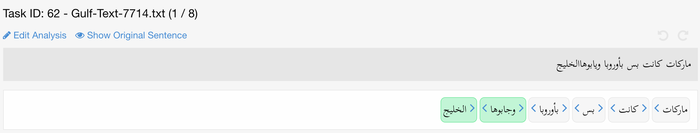
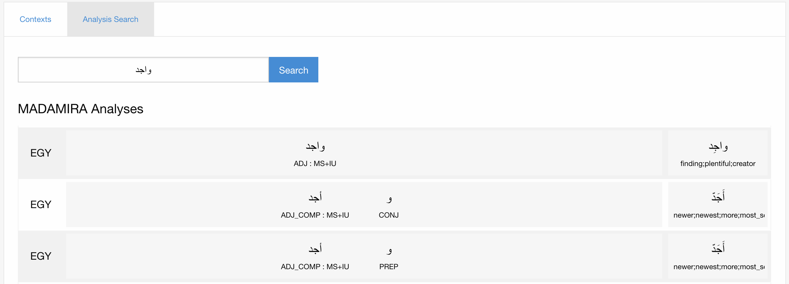

عرض توضيحي للنظام
MADARi: واجهة ويب للتوسيم الصرفي العربي
وتصحيح الإملاء بصورة مشتركة
الملخص
نقدم MADARi، وهي واجهة للتوسيم الصرفي وتصحيح الإملاء بصورة مشتركة للنص العربي.
يوفر إطارنا واجهات بديهية لتوسيم النصوص وإدارة عملية التوسيم.
ونصف دوافع هذه الواجهة وتصميمها وتنفيذها؛ كما نعرض تفاصيل من دراسة مستخدمين عملوا بهذا النظام.
العربية، الصرف، التصحيح الإملائي، التوسيم
languageresourceموارد اللغة
\nameOssama Obeid, Salam Khalifa, Nizar Habash,
Houda Bouamor,† Wajdi Zaghouani,⋆ Kemal Oflazer†
\addressComputational Approaches to Modeling Language Lab, New York University Abu Dhabi, UAE
† Carnegie Mellon University in Qatar, Qatar, ⋆ Hamad Bin Khalifa University, Qatar
{oobeid, salamkhalifa, nizar.habash}@nyu.edu,
hbouamor@qatar.cmu.edu, wzaghouani@hbku.edu.qa, ko@andrew.cmu.edu
1 المقدمة
كانت المدونات الموسومة أساسية للبحث في مجال معالجة اللغات الطبيعية (NLP). وتوفر هذه الموارد بيانات التدريب والتقييم اللازمة لبناء أنظمة وسم آلية وقياس أدائها. غير أن مهمة التوسيم اليدوي البشري صعبة ومضنية إلى حد بعيد؛ ولذلك أُنشئ عدد من أدوات واجهات التوسيم للمساعدة في هذا الجهد. وتميل هذه الأدوات إلى التخصص بغرض تحسين الأداء في مهام محددة مثل تصحيح الإملاء، ووسم نوع الكلمة (POS)، ووسم الكيانات المسماة، والتوسيم النحوي، وغير ذلك. وتفرض لغات معينة تحديات إضافية على مهمة التوسيم. فبالمقارنة مع الإنجليزية، يقتضي وسم العربية الحاجة إلى تشكيل نظام كتابة تكون فيه الحركات اختيارية، وإلى تقطيع متكرر للواصق، وإلى مجموعة أغنى من وسوم نوع الكلمة. وعلى الرغم من أن هدف الاستقلال عن اللغة أمر يضعه معظم الباحثين ومطوري الواجهات في الحسبان، فإن تحقيقه صعب إلى حد كبير من دون مقايضة مع المنفعة والكفاءة.
نركز في هذه الورقة على أداة تستهدف التوسيم الصرفي للهجات العربية. وتضيف اللهجات العربية قدرا أكبر من التعقيد مقارنة بالعربية الفصحى، إذ إن نص الإدخال يتسم بكتابة مشوشة. فعلى سبيل المثال، تتضمن الكلمة الأخيرة في الجملة المستخدمة مثالا في الشكل 1.(a)، <wyaabuwhA-Al_hliyj> wyAbwhAAlxlyj11 1 كل النقل الحرفي وارد وفق مخطط Buckwalter [\citenameHabash et al.2007]. خطأين إملائيين (دمج كلمة واستبدال محرف)، ويمكن تصحيحها إلى <wjaabuwhA Al_hliyj> wjAbwhA Alxlyj ‘وأحضروها إلى الخليج’. وعلاوة على ذلك، تتضمن أولى الكلمتين المصححتين لاصقتين تنتجان، عند تقطيعهما، الصيغة: <hA>+ <jaabuwA> +<w> w+ jAbwA +hA ‘و+ أحضروا +ها’.
ركزت الأعمال السابقة في واجهات التوسيم الصرفي للعربية إما على مشكلة التوسيم اليدوي لوسم نوع الكلمة، أو التشكيل، أو التوحيد الإملائي. وفي هذه الورقة نقدم أداة تتيح إنجاز هذه المهام كلها معا، مما يلغي احتمال انتقال الأخطاء من مستوى وسم إلى آخر. وقد أطلقنا على أداتنا اسم MADARi22 2 ¡madaary¿ madAriy تعني ‘مداري’ في العربية. نسبة إلى المشروع الذي أُنشئت في إطاره: توسيمات وموارد للهجات عربية متعددة (MADAR).
نعرض بعد ذلك الأعمال ذات الصلة بهذا الجهد. وفي القسم 3، نناقش وصف مهمة MADARi واعتبارات التصميم. وفي القسمين 4 و 5، نناقش واجهتي التوسيم والإدارة، على التوالي. ويعرض القسم 6 بعض التفاصيل عن دراسة مستخدمين للعمل باستخدام MADARi.
2 الأعمال ذات الصلة
اقتُرحت عدة أدوات وواجهات للتوسيم في لغات كثيرة ولإنجاز مهام وسم متنوعة، مثل أداتي التوسيم العامتين BRAT [\citenameStenetorp et al.2012] وWebAnno [\citenameYimam et al.2013]. أما أدوات التوسيم الخاصة بمهام معينة، فيمكن أن نذكر أدوات التحرير اللاحق وتصحيح الأخطاء، مثل عمل \newciteaziz+2012:pet، و\newciteStymne:2011:BTE:2002440.2002450، و\newciteconflrec، و\newcitedickinson. وبالنسبة إلى العربية، توجد عدة أدوات وسم قائمة، إلا أنها مصممة لمعالجة مهمة محددة في معالجة اللغات الطبيعية، وليس من السهل تكييفها مع مشروعنا. ويمكن أن نذكر أدوات للتوسيم الدلالي، مثل عمل \newcitesaleh2009aratation و\newciteel2014proposed، والعمل المتعلق بوسم اللهجات لدى \newcitebenajiba2010web و\newciteDiab10colaba:arabic. وقد بنى \newciteAttiaRA09 أداة وسم صرفي، وحديثا صُممت MADAD [\citenameAl-Twairesh et al.2016]، وهي أداة وسم تعاونية عامة الغرض على الإنترنت للنص العربي، أثناء مشروع لتقييمات المقروئية. وفي مبادرة COLABA [\citenameDiab et al.2010]، بنى المؤلفون أدوات وموارد لمعالجة بيانات وسائل التواصل الاجتماعي العربية، مثل المدونات ومنتديات النقاش والمحادثات. وفوق ذلك كله، فإن معظم هذه الأدوات، إن لم يكن كلها، غير مصممة للتعامل مع خصوصيات العربية اللهجية، وهي مهمة ذات طابع شديد التخصص. إضافة إلى ذلك، لا توفر الأدوات القائمة تسهيلات لإدارة آلاف الوثائق، وغالبا لا تتيح توزيع المهام على عشرات الموسمين مع تقييم اتفاق الموسمين البيني (IAA). وتستعير واجهتنا أفكارا من ثلاث أدوات وسم أخرى هي: DIWAN وQAWI وMANDIAC. ونصف هنا كل أداة من هذه الأدوات وكيف أثرت في تصميم نظامنا.
DIWAN
DIWAN أداة وسم للنصوص العربية اللهجية [\citenameAl-Shargi and Rambow2015]. وتزود الموسمين بمجموعة من الأدوات لتقليل الجهد المكرر، بما في ذلك استخدام المحللات الصرفية لحساب التحليلات مسبقا، وإمكانية تطبيق التحليلات على مواضع متعددة في وقت واحد. إلا أنها تتطلب التثبيت على جهاز يعمل بنظام Windows، كما أن واجهة المستخدم ليست ميسرة كثيرا للمستخدمين الجدد.
QAWI
قدمت واجهة وسم QALB على الويب (QAWI) لأول مرة مفهوم تعديلات النص القائمة على الرموز لتوسيم المدونات المتوازية المستخدمة في مهام تصحيح النص [\citenameObeid et al.2013, \citenameZaghouani et al.2014]. وقد أتاحت التسجيل الدقيق لكل التعديلات التي يجريها الموسِّم، وهو ما لم تكن الأدوات السابقة تتيحه. وكما نوضح لاحقا، فإننا نستفيد من نظام التحرير القائم على الرموز هذا في التصحيحات النصية البسيطة التي تحول نص لهجة معينة إلى صيغة CODA الملائمة.
MANDIAC
استخدمت MANDIAC [\citenameObeid et al.2016] المحرر القائم على الرموز المستخدم في QAWI لإنجاز مهام تشكيل النص. والأهم من ذلك أنها قدمت نظام تخزين بيانات هجينا ومرنا يتيح إضافة خصائص جديدة إلى الواجهة الأمامية للتوسيم مع تعديلات قليلة جدا، أو معدومة، في الواجهة الخلفية. ويستخدم نظام التوسيم لدينا هذا التصميم لتوفير المنفعة نفسها.
3 تصميم MADARi
وصف المهمة
ستُستخدم واجهة MADARi من قبل موسمين بشريين لإنشاء مدونة للنص العربي موسومة صرفيا. ويأتي النص الذي نعمل عليه من وسائل التواصل الاجتماعي، وهو نص لهجي بدرجة عالية، ولذلك يحتوي على كثير من الأخطاء الإملائية. وسيصحح الموسمون بعناية إملاء الكلمات في النص، كما سيضعون وسما صرفيا للكلمات. ويشمل التوسيم الصرفي ضمن السياق تقطيع الرموز، ووسم نوع الكلمة، والإرجاع إلى اللِّمّة، وإضافة مقابلات إنجليزية.
المتطلبات
لإدارة ومعالجة توسيم مدونة عربية لهجية واسعة النطاق، احتجنا إلى إنشاء أداة تنظّم عملية التوسيم وتيسرها.
وتشمل متطلبات تطوير أداة التوسيم MADARi ما يلي:
-
1.
عدم الحاجة إلى وقت للتثبيت، وأن تكون المتطلبات المفروضة على الموسمين في حدها الأدنى.
-
2.
يجب أن تتيح الأداة إدارة البيانات والوثائق عن بُعد، بما يسمح لقادة التوسيم بإسناد الوثائق وتقييمها من أي مكان في العالم، وبما يسمح بتوظيف موسمين في أي مكان في العالم.
-
3.
يجب أن تتيح الأداة لقادة التوسيم تخصيص مجموعات وسوم نوع الكلمة بسهولة.
-
4.
يجب أن تتيح الأداة وصولا سهلا إلى توسيمات مستخدمين آخرين لنصوص مشابهة.
-
5.
يجب أن تتيح الأداة التنقل بسهولة بين تغييرات الإملاء وإزالة اللبس الصرفي.
التصميم والمعمارية
يستعير تصميم واجهتنا كثيرا من تصميم MANDIAC [\citenameObeid et al.2016]. وعلى وجه الخصوص، استخدمنا معمارية العميل والخادم، وكذلك نظام التخزين الهجين والمرن SQL/JSON الذي استخدمته MANDIAC. ويتيح لنا ذلك توسيع واجهة التوسيم بسهولة مع تغييرات طفيفة، إن وجدت، في الواجهة الخلفية. وكما في DIWAN وMANDIAC، نستخدم أيضا MADAMIRA [MADAMIRA:2014]، وهو محلل صرفي حديث ومتقدم للعربية، لحساب التحليلات مسبقا.



4 واجهة التوسيم
واجهة التوسيم (الشكل 1(a)) هي الموضع الذي ينجز فيه الموسمون مهام التوسيم المسندة إليهم. ونصف هنا المكونات والمرافق المختلفة التي توفرها هذه الواجهة.
تحرير النص
يستطيع الموسمون تحرير الجملة في أي وقت أثناء عملية التوسيم. ويُستخدم ذلك أساسا للتأكد من أن كل النص مكتوب بصيغة CODA للهجة المختارة. وقد اعتمدنا نظام التحرير القائم على الرموز نفسه المستخدم في QAWI. ولا يتيح محررنا القائم على الرموز (الشكل 1(b)) إلا تعديل الرموز وتقسيمها ودمجها، في حين يتيح QAWI أيضا إضافة الرموز وحذفها، فضلا عن نقل الرموز من مواضعها. والعمليات التي نتيحها كافية للتهيئة وفق CODA من دون السماح بتغيير النص تغييرا جوهريا.
وسم نوع الكلمة
المكوّن الأساسي في واجهتنا هو نظام وسم نوع الكلمة. فهنا تُوسم كل الكلمات في صورتها المقطعة إلى رموز، وهي صورة تقسم الكلمة إلى الكلمة الأساس واللواصق اللاحقة واللواصق السابقة. ويُسند إلى كل واحد من هذه العناصر وسم لنوع الكلمة، وكذلك خاصية صرفية حيثما ينطبق ذلك. كما يسند الموسمون المقابل الإنجليزي واللِّمّة لكل كلمة. وتيسيرا على الموسمين، نوفر قيما محسوبة مسبقا لكل حقل باستخدام محللات MADAMIRA الصرفية.
مرافق
أضفنا خصائص مساعدة لجعل عملية التوسيم أسهل وأكثر كفاءة للموسمين. وتشمل المرافق الأساسية أزرار التراجع والإعادة، والوصول إلى النص الأصلي للرجوع إليه، وترميز الرموز المحررة بالألوان لتيسير التنقل السريع كما هو موضح في الشكل 1(a). كما نتيح للموسمين تحديث عدة رموز لها الإملاء نفسه فوريا. إضافة إلى ذلك، نوفر للموسمين أداة بحث للاطلاع على توسيمات سبق تقديمها للكلمة نفسها، وكذلك لاستعلام MADAMIRA عن تحليلات خارج السياق في لهجات مختلفة في الزمن الحقيقي (الشكل 1(c)).
5 واجهة الإدارة
تمكن واجهة إدارة التوسيم الموسِّم القائد من إدارة عملية التوسيم كلها وتنظيمها بسهولة عن بُعد وبصورة متزامنة. وتتضمن واجهة الإدارة: (a) أداة لإدارة المستخدمين من أجل إنشاء حسابات جديدة للموسمين وعرض تقدم الموسمين؛ (b) أداة لإدارة الوثائق من أجل رفع وثائق جديدة، وإسنادها للتوسيم، وعرض التوسيمات المقدمة؛ و (c) أداة مراقبة لعرض تقدم التوسيم الإجمالي؛ و(d) أداة لتقييم اتفاق الموسمين البيني (IAA) لمقارنة التوسيمات التي ينتجها كل موسِّم بمرجع ذهبي بغرض مراقبة جودة التوسيمات؛ و(e) مستودع بيانات وخاصية لتصدير التوسيمات.
6 دراسة المستخدمين
تُستخدم أداتنا في إطار مشروع توسيم جارٍ على العربية الخليجية (سيصدر لاحقا). وفي هذه الورقة نصف تجربة موسِّمة واحدة سبق لها أن أنجزت توسيمات في بيئات مختلفة. وقد أزالت الموسِّمة اللبس الصرفي عن 80 جملة، بلغ مجموعها 1,355 رمزا خاما من نص عربي خليجي.
لاحظنا أن الموسِّمة فضلت، بناء على خبرتها، تحويل كتابة النص إلى CODA أولا، مما جعل مهمة إزالة اللبس أكثر كفاءة.
استغرق إكمال هذه المهمة نحو 52 دقيقة (بمعدل قدره 1,563 كلمة/ساعة). وأجرت الموسِّمة لاحقا بعض الإصلاحات الطفيفة، وهي ميزة في أداتنا تحد من انتقال الأخطاء. وبلغ العدد الإجمالي للكلمات التي غُيّرت من الرموز الخام إلى CODA مقدار 288 (21%). وكانت التغييرات في معظمها تعديلات إملائية، أما الباقي فكان تقسيما للكلمات (44 حالات أو 15% من جميع التغييرات)، ولم تحدث أي عمليات دمج. ويبلغ عدد الكلمات النهائي 1,398 كلمة.
بعد التحويل إلى CODA، عملت الموسِّمة على تقطيع الرموز ووسم نوع الكلمة والإرجاع إلى اللِّمّة وإضافة المقابلات الإنجليزية. واستغرقت هذه المهمة الأكثر تعقيدا نحو 6 ساعات (بمعدل 277 كلمة/ساعة). وهذا يجعل الزمن التراكمي الذي صُرف لإنهاء مهمتي التعديل الإملائي وإزالة اللبس الكامل لهذه المجموعة من البيانات نحو 7 ساعات (بمعدل 200 كلمة/ساعة).
وبما أن الأداة توفر تخمينات أولية لكل مكونات التوسيم، استطاعت الموسِّمة أن تستخدم كثيرا من القرارات الصحيحة كما هي، وأن تعدلها في حالات أخرى. وفي حالة تقسيم كلمة، تزيل الأداة حاليا تنبؤات الكلمة الخام، غير أن أداة البحث عن التحليلات تتيح وصولا سريعا إلى بدائل للاختيار منها. قارنّا الاختيارات النهائية لتقطيع الرموز ووسم نوع الكلمة واللِّمّة بالاختيارات التي اقترحتها الأداة على نسخة CODA من النص. ووجدنا أن الأداة قدمت اقتراحات صحيحة في 74% من الحالات في تقطيع الرموز، وفي 69% من الحالات في وسوم نوع الكلمة للكلمة الأساس، وفي 70% من الحالات في اللِّمات.
وأشارت الموسِّمة إلى أن المرافق المفضلة لديها كانت القدرة على وسم عدة رموز من النوع نفسه في سياقات مختلفة في آن واحد، والقدرة على استخدام مربع ‘البحث عن التحليلات’ لتوسيم عدة حقول في وقت واحد.
7 الخلاصة والآفاق
قدمنا لمحة عامة عن إطار التوسيم القائم على الويب لدينا للتوسيم الصرفي وتصحيح الإملاء بصورة مشتركة للعربية. ونخطط لإصدار الأداة وإتاحتها مجانا لمجتمع البحث بحيث يمكن استخدامها في مهام وسم أخرى ذات صلة. وسنواصل مستقبلا توسيع الأداة لتعمل على لهجات وأنواع نصية مختلفة من العربية.
الشكر والتقدير
أُتيح إنجاز هذا المنشور بفضل المنحة NPRP7-290-1-047 من الصندوق القطري لرعاية البحث العلمي (وهو عضو في مؤسسة قطر). وتقع المسؤولية عن التصريحات الواردة هنا على عاتق المؤلفين وحدهم.
المراجع الببليوغرافية
References
- [\citenameAl-Shargi and Rambow2015] Al-Shargi, F. and Rambow, O. (2015). Diwan: A dialectal word annotation tool for arabic. In ANLP Workshop 2015, page 49.
- [\citenameAl-Twairesh et al.2016] Al-Twairesh, N., Al-Dayel, A., Al-Khalifa, H., Al-Yahya, M., Alageel, S., Abanmy, N., and Al-Shenaifi, N. (2016). Madad: A readability annotation tool for arabic text. In Nicoletta Calzolari (Conference Chair), et al., editors, Proceedings of the Tenth International Conference on Language Resources and Evaluation (LREC 2016), Paris, France, may. European Language Resources Association (ELRA).
- [\citenameAttia et al.2009] Attia, M., Rashwan, M. A., and Al-Badrashiny, M. A. (2009). Fassieh, a semi-automatic visual interactive tool for morphological, pos-tags, phonetic, and semantic annotation of arabic text corpora. IEEE transactions on audio, speech, and language processing, 17(5):916–925.
- [\citenameAziz et al.2012] Aziz, W., de Sousa, S. C. M., and Specia, L. (2012). PET: a tool for post-editing and assessing machine translation. In Proceedings of the LREC’2012.
- [\citenameBenajiba and Diab2010] Benajiba, Y. and Diab, M. (2010). A web application for dialectal arabic text annotation. In Proceedings of the lrec workshop for language resources (lrs) and human language technologies (hlt) for semitic languages: Status, updates, and prospects.
- [\citenameDiab et al.2010] Diab, M., Habash, N., Rambow, O., Altantawy, M., and Benajiba, Y. (2010). Colaba: Arabic dialect annotation and processing. In LREC Workshop on Semitic Language Processing.
- [\citenameDickinson and Ledbetter2012] Dickinson, M. and Ledbetter, S. (2012). Annotating errors in a Hungarian learner corpus. In Proceedings of the LREC’2012.
- [\citenameEl-ghobashy et al.2014] El-ghobashy, A. N., Attiya, G. M., and Kelash, H. M. (2014). A proposed framework for arabic semantic annotation tool international journal of computing and digital systems.-2014, vol. 3, no. 1.
- [\citenameHabash et al.2007] Habash, N., Soudi, A., and Buckwalter, T. (2007). On Arabic transliteration. In Abdelhadi Soudi, et al., editors, Arabic Computational Morphology, volume 38 of Text, Speech and Language Technology, chapter 2, pages 15–22. Springer.
- [\citenameLlitjós and Carbonell2004] Llitjós, A. F. and Carbonell, J. G. (2004). The translation correction tool: English-Spanish user studies. In Prceedings of the LREC’04.
- [\citenameObeid et al.2013] Obeid, O., Zaghouani, W., Mohit, B., Habash, N., Oflazer, K., and Tomeh, N. (2013). A Web-based Annotation Framework For Large-Scale Text Correction. In The Companion Volume of the Proceedings of IJCNLP 2013: System Demonstrations, pages 1–4, Nagoya, Japan.
- [\citenameObeid et al.2016] Obeid, O., Bouamor, H., Zaghouani, W., Ghoneim, M., Hawwari, A., Alqahtani, S., Diab, M., and Oflazer, K. (2016). Mandiac: A web-based annotation system for manual arabic diacritization. In The 2nd Workshop on Arabic Corpora and Processing Tools 2016 Theme: Social Media, page 16.
- [\citenamePasha et al.2014] Pasha, A., Al-Badrashiny, M., Diab, M. T., El Kholy, A., Eskander, R., Habash, N., Pooleery, M., Rambow, O., and Roth, R. (2014). Madamira: A fast, comprehensive tool for morphological analysis and disambiguation of arabic. In LREC, volume 14, pages 1094–1101.
- [\citenameSaleh and Al-Khalifa2009] Saleh, L. M. B. and Al-Khalifa, H. S. (2009). Aratation: an arabic semantic annotation tool. In Proceedings of the 11th International Conference on Information Integration and Web-based Applications & Services, pages 447–451. ACM.
- [\citenameStenetorp et al.2012] Stenetorp, P., Pyysalo, S., Topić, G., Ohta, T., Ananiadou, S., and Tsujii, J. (2012). Brat: A web-based tool for nlp-assisted text annotation. In Proceedings of the Demonstrations at the 13th Conference of the European Chapter of the Association for Computational Linguistics, EACL ’12, pages 102–107, Stroudsburg, PA, USA. Association for Computational Linguistics.
- [\citenameStymne2011] Stymne, S. (2011). Blast: a tool for error analysis of machine translation output. In Proceedings of the ACL’2011: Systems Demonstrations, pages 56–61.
- [\citenameYimam et al.2013] Yimam, S. M., Gurevych, I., de Castilho, R. E., and Biemann, C. (2013). Webanno: A flexible, web-based and visually supported system for distributed annotations. In ACL (Conference System Demonstrations), pages 1–6. The Association for Computer Linguistics.
- [\citenameZaghouani et al.2014] Zaghouani, W., Mohit, B., Habash, N., Obeid, O., Tomeh, N., Rozovskaya, A., Farra, N., Alkuhlani, S., and Oflazer, K. (2014). Large scale arabic error annotation: Guidelines and framework. In LREC, pages 2362–2369.